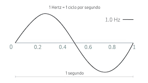
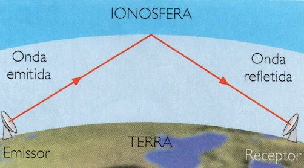
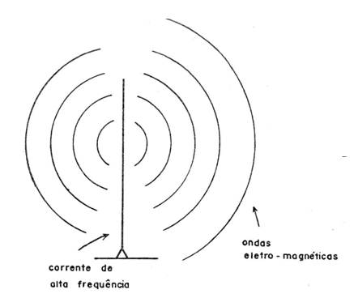
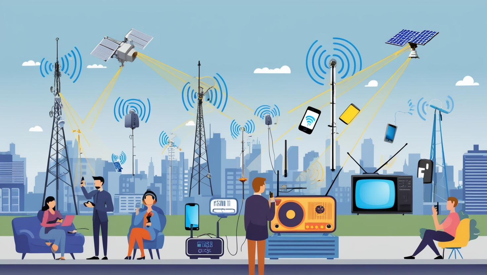
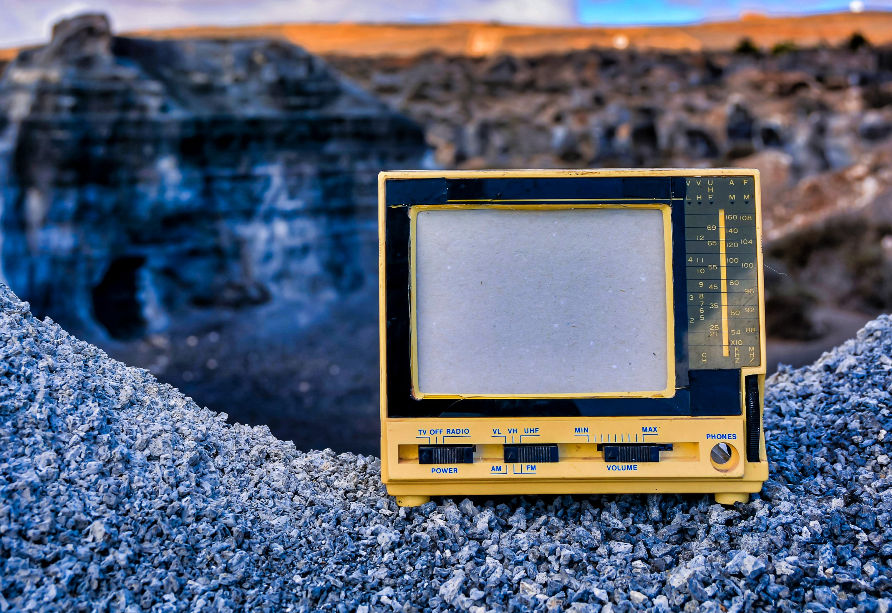

Que ondas são essas ondas: As ondas de rádio são um tipo de radiação eletromagnética, assim como a luz visível, mas com características diferentes, principalmente em relação ao comprimento de onda e frequência. Elas possuem comprimentos de onda que variam de alguns metros até milhares de quilômetros, e suas frequências variam de 3 Hz a 300 GHz.

Como funcionam:As ondas de rádio são geradas por transmissores, que criam sinais eletromagnéticos ao variar a corrente elétrica. Esses sinais viajam através do ar ou do espaço e são recebidos por antenas em dispositivos receptores, como rádios e televisores.


Porque é utilizada:As ondas de rádio são amplamente usadas devido à sua capacidade de viajar longas distâncias, atravessar obstáculos como prédios e montanhas, e sua eficiência em comunicação sem fio. Além disso, elas são de baixo custo, comparadas a outras tecnologias de transmissão, como cabos ou fibras ópticas. Isso as torna ideais para sistemas de telecomunicações e para tecnologias como rádio, televisão, telefonia móvel, Wi-Fi e Bluetooth.

Onde encontramos: As ondas de rádio estão presentes em uma variedade de dispositivos que usamos diariamente. Elas são usadas em rádios AM e FM para transmitir sinais de áudio, em televisores para receber sinais de vídeo, em celulares para chamadas e navegação por dados, e em Wi-Fi e Bluetooth para comunicação sem fio entre dispositivos. Além disso, elas são essenciais em satélites de comunicação, radares, sistemas de navegação em veículos e aparelhos de comunicação marítima e aérea, facilitando a conectividade e a troca de informações em várias plataformas.
